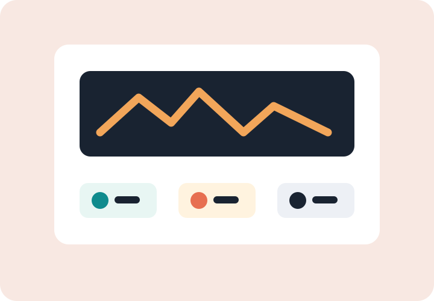

Adaptive practice
Students get guided practice that adjusts by mastery and keeps teachers informed.
With schools
BrightPath gives schools learning programs, teacher tools, and family-facing progress views without adding another operational burden.

For students
Students get guided practice that adjusts by mastery and keeps teachers informed.
Applied learning projects connect classroom goals with real-world questions.
Simple progress summaries help families understand where support is needed.
For teachers
Teachers can assign pathways, see progress, and identify small groups without rebuilding their week around a platform.